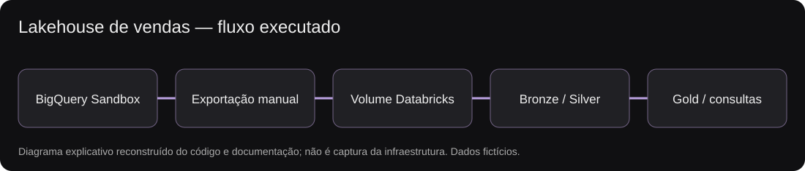

ARQUITETURA · QUALIDADE · REPROCESSAMENTO
Evidências de engenharia de dados
Testes, registros de execução e decisões técnicas do laboratório de lakehouse, coletados em 22/11/2026. O pipeline do Portal da Transparência tem o código aberto no GitHub.
LABORATÓRIO CLOUD
Lakehouse de vendas

Diagrama da arquitetura executada. A cópia do GCP para o Databricks é manual.
Executados localmente em 22/11/2026, em 11,44 segundos. Cobrem regras de domínio, Delta local, CLI e casos de falha.
Dois jobs aprovados, com testes, build do wheel e demonstração com replay.
Resultados do processamento
| Cenário | Receita | Estado esperado |
|---|---|---|
| Carga inicial | R$ 350,00 | 3 vendas ativas |
| Correção, exclusão e inclusão | R$ 250,00 | 3 ativas / 4 linhas Silver |
| Eventos antigos | R$ 250,00 | Estado mais recente preservado |
| Replay local conferido | R$ 250,00 | Sem duplicar vendas |
Os valores são fictícios e servem para conferir a regra de processamento.
Cópia revisada para download
A cópia revisada passou pelos mesmos 38 testes (9,61 s) e por duas execuções da demonstração com replay. Tirei dela as URLs privadas e as saídas dos notebooks.
Execução no Databricks
Em 15/11/2026, o job no Databricks terminou com sucesso em 2min56s, processando oito eventos e chegando à receita final de R$ 250,00.
Os testes locais não substituem a execução do Spark no workspace. O laboratório ainda não tem transferência automatizada, checkpoint de arquivos nem teste de escala.
Como conferir o material
Os arquivos JSON são os registros dos jobs no GitHub e da execução local. Enquanto o repositório do lakehouse estiver privado, dá para reproduzir tudo com o pacote revisado para download.
Este material não inclui dados de clientes, código da empresa nem detalhes da infraestrutura interna.